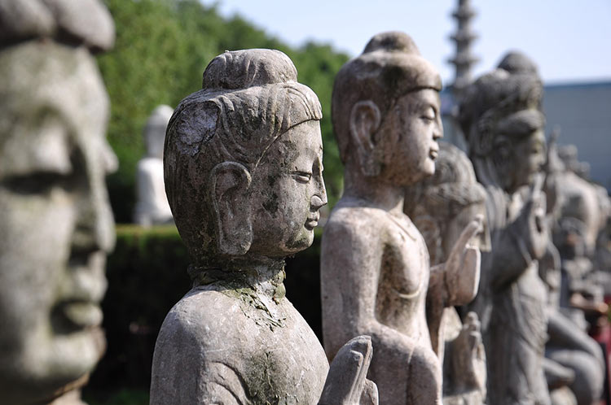

Философия Древнего Востока — это не только древнейший кладезь человеческой мудрости, но и уникальный источник для поиска истины, очень своеобразный пласт духовной культуры человечества. Особенности культурно-исторических условий определили глубокое своеобразие восточного и западного типов философии и стилей мышления. И не смотря на то, что русскому человеку более близка по духу западая философия, ибо Россия на протяжении столетий испытывала и продолжает испытывать влияние Запада, восточная философская традиция, исторически возникшая раньше западной, во все времена служила и продолжает служить источником мудрости и вдохновлять лучшие умы человечества. На наш взгляд, она многому может научить и современного читателя.
В чем же особенность философского знания, стиля мышления стран Востока? — это не только древнейший кладезь человеческой мудрости, но и уникальный источник для поиска истины, очень своеобразный пласт духовной культуры человечества. Особенности культурно-исторических условий определили глубокое своеобразие восточного и западного типов философии и стилей мышления. И не смотря на то, что русскому человеку более близка по духу западая философия, ибо Россия на протяжении столетий испытывала и продолжает испытывать влияние Запада, восточная философская традиция, исторически возникшая раньше западной, во все времена служила и продолжает служить источником мудрости и вдохновлять лучшие умы человечества. На наш взгляд, она многому может научить и современного читателя.
Особенности философии Древнего Востока.
В чем же особенность философского знания, стиля мышления стран Востока?
Практически во всех философских учениях Востока можно выделить некоторые общие специфические черты:
Жизненная ориентация Восточной философии. Если для западной традиции свойственно чередование эссенциальной философии (философии сущности) и экзистенциальной философии (философии существования), то для восточной традиции характерно преобладание философии второго типа. Философия существует для жизни и должна проявляться и использоваться во всех ее сферах: частной, общественной, международной и т. д. — это первое положение, из которого исходили мыслители Востока. При этом если мудрецы древней Индии делились с учениками знанием о том, как уйти из этого мира, то китайские мыслители учили тому, как выжить в существующей реальности. «Первое близко к религиозному опыту. Второе — к житейской мудрости».
Синтез природного, духовного и телесного. Если для европейской традиции характерен ярко выраженный антропоцентризм, коренящийся уже в христианстве, и трансформировавшийся в энергетизм в новоевропейской философии, то в восточной философии только в согласии с собственным духовным и жизненным опытом, не нарушая гармонии окружающего мира и не нанося ему вреда, возможно решение основных проблем человеческого бытия.
Целостность, синтетичность гносеологической (познавательной) установки в Восточной философии, отсутствие чистой рациональности и субъект-объектности в познании, утвердившейся в Западной философии в Новое время. Познание людьми истины основывается не только на интеллекте. Оно опирается на целостный опыт, в основе которого лежат чувства. И игнорировать их нельзя. Истина постигается не только в процессе познания, но и в процессе созерцания, понимаемого как тождественность Я и не-Я, когда Я — это всеобщее, единичное, неизменное, а не-Я — это существующий мир, в котором Я действует. Если для западного мышления традиционен принцип двойственности — «одно и другое», то для восточного мышления принцип недвойственности — «одно в другом», «одно во всем и все в одном». Этот целостный взгляд на мир — первый и главный признак «просветления».
Целостность восточного стиля мышления во многом связана с особенностями языка. Для Запада характерен атомарный характер алфавитного языка, аналитическая структура слова, где самостоятельную семантическую нагрузку несут отдельные его части (корень, суффикс, приставка и т.д.), которые сообщают грамматический смысл целому, механически собранному из этих частей. За словом алфавитного языка стоит понятие, образное содержание которого почти полностью устранено. Для восточной культуры характерна целостность иероглифического знака, заданная самой графической структурой иероглифа. Понятие слито в восприятии со своим образом, запечатленным символически-графически, и раскрывается через целостную образность знака. При этом в западной культуре языку отведена роль средства выражения, фиксации и трансляции смысла. В восточной традиции иероглиф не просто транслирует смысл, а содержит его в себе, в том числе в своем внешнем виде.
Многогранность истины. Если в классической европейской философии преобладал рационализм, ориентированный на поиски объективной общезначимой истины, то мыслители Востока были убеждены, что истина многогранна, она никогда не может быть выражена полностью, различные воззрения на нее представляют лишь ее различные стороны. Но в любом случае ее познание предполагает «выход» на высший, интуитивно-мистический уровень: слияние с Абсолютом, с космическим законом, переживание, а не только осмысление своего единства с миром. При этом они делали вывод, что имеются разные пути к совершенству и любой из них может быть принят в соответствии с внутренней склонностью индивида.
Антропологический перфекционизм, т.е. представление о том, что конечной целью каждого индивида должно быть совершенствование самого себя, так как только через собственное совершенствование можно поднять мир до совершенства, а также приблизиться к Абсолюту. Именно в таком контексте понимания роли и значения философии в жизни людей происходило ее формирование в Индии и Китае.
Конкретность. Учения Востока создавались как моральные, научные или религиозные. Статус философских учений они приобретают только с точки зрения европейского сознания. Однако можно считать такое рассмотрение этих учений вполне оправданно, поскольку основная черта философии — это попытка ответить на вопросы, которые касаются наиболее значимых сторон бытия человека как особого существа.
Отсутствие целостности восточной философии. На Востоке существовало две культуры, в которых практически одновременно с Древней Грецией зародилась философия: Индия и Китай. Эти культуры крайне самобытны, а потому их объединение под именем восточной философии достаточно условно. В частности, некоторые исследователи считают Индию тем местом, где жили племена, которые переместились на территорию современной Европы и стали прародителями для европейских народов. С этой точки зрения индийская культура гораздо ближе для европейцев, чем китайская. По крайней мере, нас объединяет общее происхождение и общий языковой и культурный фон, которые и определяют наш взгляд на мир. Кстати, это подтверждается тем, что индийцев, как и греков, всегда интересовали вопросы, связанные с сущностью материи, первоэлементом, который лежит в основе всего мира: в основе первых философских концепций лежали преображенные мифы. В дальнейших разделах будет видно, что у китайских мыслителей философские проблемы ставятся совершенно иначе, они в меньшей степени интересовались проблемой первоэлемента (или решали эту проблему качественно по-другому).
Философия в подлинном смысле этого слова появилась в Индии и Китае позже создания этих памятников и, в значительной степени, в результате полемики с их традиционным пониманием. Другими словами, ее возникновение было связано с противостоянием традиционным устоям и представлениям, отражавшим нужды общинной жизни. Самостоятельные философские школы в Индии и Китае формируются приблизительно в VI веке до н. э.